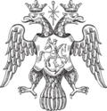

{kind=link}
{kind=link}
{kind=link}
{kind=link}
{kind=link}
{kind=link}
{kind=link}
Original file (7,821 × 8,155 pixels, file size: 5.12 MB, MIME type: image/png)
| This is a file from the Wikimedia Commons. Information from its description page there is shown below. Commons is a freely licensed media file repository. You can help. |
Summary
| Description |
Russian coat of arms during the reign of Ivan Grozny, 1589. Moscow coat of arms appears as a part of it. |
||||
| Date | Original date 1589, date of upload 2007-12-30 | ||||
| Source | Image:Russian coa 1589 grozny.gif | ||||
| Author | Vector-Images.com, uploaded by User:Nickpo | ||||
| Permission (Reusing this file) |
|
File history
Click on a date/time to view the file as it appeared at that time.
| Date/Time | Thumbnail | Dimensions | User | Comment | |
|---|---|---|---|---|---|
| current | 19:09, 21 May 2023 |  | 7,821 × 8,155 (5.12 MB) | TheQWERTYCoder | Purchased original vector (EPS) version from Vector-Images.com and converted to PNG using GIMP 2.10 |
| 14:53, 15 September 2013 |  | 200 × 209 (21 KB) | McZusatz | Reverted to version as of 04:04, 30 December 2007 | |
| 14:51, 15 September 2013 |  | 200 × 209 (16 KB) | McZusatz | User requested conversion to PNG. Bot: Converting file to superior PNG file. (Uploaded new version of file using Wiki.java) | |
| 04:04, 30 December 2007 |  | 200 × 209 (21 KB) | Nickpo | {{Information |Description=Russian coat of arms during the reign of Ivan Grozny, 1589. Moscow coat of arms appears as a part of it. |Source=[http://commons.wikimedia.org/wiki/Image:Russian_coa_1589_grozny.gif] |Date=Original date 1589, date of upload 2007 |
File usage
The following 4 pages use this file:
Global file usage
The following other wikis use this file:
- Usage on ar.wikipedia.org
- Usage on arz.wikipedia.org
- Usage on ast.wikipedia.org
- Usage on be-tarask.wikipedia.org
- Usage on be.wikipedia.org
- Usage on bg.wikipedia.org
- Usage on ca.wikipedia.org
- Usage on da.wikipedia.org
- Usage on en.wiktionary.org
- Usage on eo.wikipedia.org
- Usage on es.wikipedia.org
- Usage on et.wikipedia.org
- Koluvere lahing
- Vene-Liivi sõda
- Kahekümneviieaastane sõda
- Spilve lahing
- Paide piiramine (1572–1573)
- Tallinna piiramine (1710)
- Paide piiramine (1581)
- Ingeri sõda
- Vene-Rootsi sõda (1495–1497)
- Narva piiramine (1581)
- Riia piiramine (1710)
- Gemauerthofi lahing
- Narva piiramine (1558)
- Tallinna piiramine (1570–1571)
- Hołowczyni lahing
- Riia piiramine (1656)
- Lesnaja lahing
- Malatitze lahing
- Grodno lahing
- Sokolki lahing
- Pärnu piiramine (1710)
- Tallinna piiramine (1577)
- Usage on eu.wikipedia.org
- Usage on fa.wikipedia.org
- Usage on fi.wikipedia.org
- Usage on gl.wikipedia.org
- Usage on hu.wikipedia.org
- Usage on id.wikipedia.org
View more global usage of this file.
{kind=link}